특수용접기능사 (2010-03-28 기출문제)
1과목: 용접일반
1. 피복 금속 아크 용접에서 “모재의 일부가 녹은 쇳물 부분을” 의미하는 것은?
- 슬래그
- 용융지
- 용입부
- 용착부
(정답률: 82%)

2. 가스용접에서 가변압식 팁의 능력을 표시하는 것은?
- 표준불꽃으로 용접시 매시간당 아세틸렌가스의 소비량을 리터로 표시한 것
- 표준불꽃으로 용접시 매시간당 산소의 소비량을 리터로 표시한 것
- 표준불꽃으로 용접시 매분당 아세틸렌가스의 소비량을 리터로 표시한 것
- 표준불꽃으로 용접시 매분당 산소의 소비량을 리터로 표시한 것
(정답률: 78%)
3. 용접기의 특성 중에서 부하전류(아크전류)가 증가하면 단자 전압이 저하하는 특성은?
- 수하 특성
- 정전압 특성
- 상승 특성
- 자기제어 특성
(정답률: 85%)
4. 금속 아크 용접법의 개발자는?
- 톰슨
- 푸세
- 슬라비아노프
- 베르나도스
(정답률: 52%)
5. 정격전류 200A, 전격사용율 45%인 아크 용접기로써 실제 아크 전압 30V, 아크 전류 150A로 용접을 수행한다고 가정할 때 허용사용률은 약 얼마인가?
- 70%
- 80%
- 90%
- 100%
(정답률: 55%)
6. 피복 아크 용접봉에서 피복제의 주된 역할이 아닌 것은?
- 아크를 안정하게 한다.
- 용착금속의 탈산 정련작용을 한다.
- 용착금석의 냉각속도를 느리게 한다.
- 용융점이 높은 적당한 점성의 가벼운 슬래그를 만든다.
(정답률: 60%)
7. 가스용접에서 알루미늄을 가스용접 하고자 할 때 일반적으로 어떠한 용접봉을 사용해야 하는가?
- Al에 소량의 P를 첨가한 용접봉
- Al에 소량의 S를 첨가한 용접봉
- Al에 소량의 C를 첨가한 용접봉
- Al에 소량의 Fe를 첨가한 용접봉
(정답률: 46%)
8. 산소-아세틸렌 용접법에서 전진법과 비교한 후진법의 설명으로 틀린 것은?
- 열 이용률이 좋다.
- 용접변형이 작다.
- 용접 속도가 느리다.
- 홈 각도가 작다.
(정답률: 72%)
9. 가스용접에 사용되는 가스가 아닌 것은?(오류 신고가 접수된 문제입니다. 반드시 정답과 해설을 확인하시기 바랍니다.)
- 천연가스
- 부탄가스
- 도시가스
- 티탄가스
(정답률: 52%)
10. 플라스마 제트 절단에서 주로 이용하는 효과는?
- 열적 핀치 효과
- 열적 불림 효과
- 열적 담금 효과
- 열적 뜨임 효과
(정답률: 76%)
11. 연강용 피복 아크 용접봉 심선의 성분 중 고온균열을 일으키는 성분은?
- 황
- 인
- 망간
- 규소
(정답률: 61%)
12. 피복 금속 아크 용접에 대한 설명으로 잘못된 것은?
- 전기의 아크열을 이용한 용접법이다.
- 모재와 용접봉을 녹여서 접합하는 비용극식이다.
- 보통 전기용접이라고 한다.
- 용접봉은 금속 심선의 주위에 피복제를 바른 것을 사용한다.
(정답률: 75%)
13. 아크에어 가우징에 사용되는 압축공기에 대한 설명으로 올바른 것은?
- 압축공기의 압력은 2~3[kgf/㎠] 정도가 좋다.
- 압축공기 분사는 항상 봉의 바로 앞에서 이루어져야 효과적이다.
- 약간의 압력 변동에도 작업에 영향을 미치므로 주의한다.
- 압축공기가 없을 경우 긴급 시에는 용기에 압축된 질소나 아르곤 가스를 사용한다.
(정답률: 49%)
14. 무부하 전압이 85~90[V]로 비교적 높은 교류 아크 용접기에 감전재해의 위험으로부터 보호하기 위해 사용되는 장치는?
- 고주파 발생 장치
- 원격 제어 장치
- 전격 방지 장치
- 하트 스타트 장치
(정답률: 91%)
15. 가스 절단면에 있어서 절단 기류의 입구점과 출구점 사이의 수평거리를 무엇이라고 하는가?
- 드래그
- 절단깊이
- 절단거리
- 너깃
(정답률: 59%)
16. 아세틸렌은 각종 액체에 잘 용해되는데 벤젠에서는 몇 배의 아세틸렌가스를 용해하는가?
- 4
- 10
- 15
- 100
(정답률: 61%)
17. 직류 아크 용접에서 역극성(DCRP)에 대한 설명 중 틀린 것은?
- 용접봉의 용융속도가 빠르다.
- 모재의 용입이 얕다.
- 박판, 주철, 비철금속의 용접에 쓰인다.
- 모재에 양극(＋)을, 용접봉에 음극(－)을 연결한다.
(정답률: 74%)
18. 특수용도용 합금강에서 내열강의 요구 성질에 관한 설명으로 옳은 것은?
- 고온에서 O2, SO2 등에 침식되어야 한다.
- 고온에서 우수한 기계적 성질을 가져야 한다.
- 냉간 및 열간가공이 어려워야 한다.
- 반복응력에 대한 피로강도가 적어야 한다.
(정답률: 72%)
19. Al-Cu합금의 G.P 집합체(Guinier Preston Zone)에 의한 경화는?
- 시효 경화
- 석출 경화
- 확산 경화
- 섬유 경화
(정답률: 58%)
20. 6:4 황동에 F2를 1% 정도 품은 것으로 강도가 크고 내식성이 좋아 광산기계, 선박용기계, 화학기계 등에 사용되는 합금은?
- 연황동
- 주석황동
- 델타메탈
- 망간황동
(정답률: 75%)
21. 조성이 같은 탄소강을 담금질함에 있어서 질량의 대소에 따라 담금질효과가 다른 현상을 무엇이라 하는가?
- 질량효과
- 담금효과
- 경화효과
- 자연효과
(정답률: 73%)
22. 합급강에서 고온에서의 크리프 강도를 높게 하는 원소는?
- O
- S
- Mo
- H
(정답률: 67%)
23. 다음 재료에서 용융점이 가장 높은 재료는?
- Mg
- W
- Pb
- Fe
(정답률: 66%)
24. 강괴를 탈산의 정도에 따라 분류할 때 이에 해당되지 않는 것은?
- 킬드강
- 림드강
- 세미킬드강
- 쾌삭강
(정답률: 71%)
25. 탄소강에 함유된 황(S)에 대해 설명한 것 중 맞는 것은?
- 황은 철과 화합하여 용융온도가 높은 황화철을 만든다.
- 황은 단조온도에서 융체로 되어 결정입계로 나와 저온가공을 해친다.
- 황은 절삭성을 향상시킨다.
- 황에 의한 청열취성의 폐해를 제거하기 위하여 망간을 첨가한다.
(정답률: 35%)
26. 탄소 주강품 SC 370에서 숫자 370은 무엇을 나타내는가?
- 인장강도
- 탄소함유량
- 연신율
- 단면수축률
(정답률: 70%)
27. 오스테나이트계 스테인리스강의 표준조성으로 맞는 것은?
- Cr(18%) - Ni(8%)
- Ni(18%) - Cr(8%)
- Cr(13%) - Ni(4%)
- Ni(13%) - Cr(4%)
(정답률: 73%)
28. 금속침투법 중 Cr을 침투시키는 것은?
- 세라다이징(sheradizing)
- 크로마이징(chromizing)
- 킬로마이징(calorizing)
- 실리코나이징(siliconizing)
(정답률: 82%)
29. 다층 용접시 용접이음부의 청정방법으로 틀린 것은?
- 그라인더를 이용하여 이음부 등을 청소한다.
- 많은 양의 청소는 쇼트 블라스트를 이용한다.
- 녹슬지 않도록 기름걸레로 청소한다.
- 와이어 브러시를 이용하여 용접부의 이물질을 깨끗이 제거한다.
(정답률: 85%)
30. 서브머지드 아크 용접에서 본용접 시점과 끝나는 부분에 용접결함을 효과적으로 방지하기 위하여 사용하는 것은?
- 동판 받침
- 백킹(backing)
- 엔드 탭(end tab)
- 실링(sealing) 비드
(정답률: 83%)
31. 이산화탄소 아크 용접의 특징이 아닌 것은?
- 전원은 교류 정전압 또는 수하 특성을 사용한다.
- 가시 아크이므로 시공이 편리하다.
- 모든 용접 자세로 용접이 가능하다.
- 산화나 질화가 되지 않는 양호한 용착 금속을 얻을 수 있다.
(정답률: 46%)
32. CO2용접 중 와이어가 팁에 용착될 때의 방지대책으로 틀린 것은?
- 팁과 모재 사이의 거리는 와이어의 지름에 관계없이 짧게만 사용한다.
- 와이어를 모재에서 떼놓고 아크 스타트를 한다.
- 와이어에 대한 팁의 크기가 맞는 것을 사용한다.
- 와이어의 선단에 용적이 붙어 있을 때는 와이어 선단을 절단한다.
(정답률: 69%)
33. 가연성가스로 스파크 등에 의한 화재에 대하여 가장 주의해야 할 가스는?
- LPG
- CO2
- He
- O2
(정답률: 85%)
34. 불활성 가스 금속 아크 용접의 용접토치 구성 부품 중 노즐과 토치 몸체 사이에서 통전을 막아 절연시키는 역할을 하는 것은?
- 가스 분출기(gas diffuser)
- 인슐레이터(insulator)
- 팁(tip)
- 플렉시블 콘딧(flexible conduit)
(정답률: 49%)
35. CO2가스 아크 용접조건에 대한 설명으로 틀린 것은?
- 전류를 높게 하면 와이어의 녹아내림이 빠르고 용착률과 용입이 증가한다.
- 아크전압을 높이면 비드가 넓어지고 납작해지며, 지나치게 아크 전압을 높이면 기포가 발생한다.
- 아크 전압이 너무 낮으면 볼록하고 넓은 비드를 형성하며, 와이어가 잘 녹는다.
- 용접 속도가 빠르면 모재의 입열이 감소되어 용입이 얕아지고 비드 폭이 좁아진다.
(정답률: 69%)
2과목: 용접재료
36. 가접 방법에서 가장 옳은 것은?
- 가접은 반드시 본 용접을 실시할 홈 안에 하도록 한다.
- 가접은 가능한 튼튼하게 하기 위하여 길고 많게 한다.
- 가접은 본 용접과 비슷한 기량을 가진 용접공이 할 필요는 없다.
- 가접은 강도상 중요한 곳과 용접의 시점 및 종점이 되는 끝부분에는 피해야 한다.
(정답률: 54%)
37. 스터드 용접에서 페룰의 역할이 아닌 것은?
- 용융금속의 산화를 방지한다.
- 용융금속의 유출을 막아준다.
- 용착부의 오염을 방지한다.
- 아크열을 발산한다.
(정답률: 67%)
38. 전격의 방지대책으로 적합하지 않은 것은?
- 용접기의 내부는 수시로 열어서 점검하거나 청소한다.
- 홀더나 용접봉은 절대로 맨손으로 취급하지 않는다.
- 절연 홀더의 절연부분이 파손되면 즉시 보수하거나 교체한다.
- 땀, 물 등에 의해 습기찬 작업복, 장갑, 구두 등은 착용하지 않는다.
(정답률: 86%)
39. 전자 빔 용접의 특징으로 틀린 것은?
- 정밀 용접이 가능하다.
- 용입이 깊어 다층용접도 단층용접으로 완성할 수 있다.
- 유해가스에 의한 오염이 적고 높은 순도의 용접이 가능하다.
- 용접부의 열 영향부가 크고 설비비가 적게 든다.
(정답률: 75%)
40. 불활성 가스에 해당되는 것은?
- Sr
- H2
- Ar
- O2
(정답률: 80%)
41. 용접법 중 소모식 전극을 사용하는 방법이 아닌 것은?
- TIG 용접
- 피복 아크 용접
- 탄산가스 아크 용접
- 서브머지드 아크 용접
(정답률: 73%)
42. 연납은 주로 납과 무엇으로 그 성분이 구성되어 있는가?
- 니켈
- 주석
- 알루미늄
- 스테인리스
(정답률: 69%)
43. 용접부 검사법 중 기계적 시험법이 아닌 것은?
- 굽힘 시험
- 경도 시험
- 인장 시험
- 부식 시험
(정답률: 88%)
44. CO2가스 아크 용접시 저전류 영역에서 가스유량은 약 몇 ℓ/min 정도가 가장 적당한가?
- 1~5
- 6~10
- 10~15
- 16~20
(정답률: 66%)
45. KS에서 “용착부에 나타난 비금속 물질”을 나타내는 용접 용어는?
- 덧 살
- 슬래그 섞임
- 슬래그
- 스패터
(정답률: 57%)
46. 용접선의 방향이 전달하는 응력의 방향과 거의 평행한 필릿 용접은?
- 전면 필릿 용접
- 측면 필릿 용접
- 단속 필릿 용접
- 슬롯 필릿 용접
(정답률: 44%)
47. 저항용접의 종류가 아닌 것은?
- 스폿 용접
- 심 용접
- 업셋 맞대기 용접
- 초음파 용접
(정답률: 59%)
48. 작은 강구나 다이아몬드를 붙인 소형의 추를 일정 높이에서 시험편 표면에 낙하시켜 튀어 오르는 반발 높이에 의하여 경도를 측정하는 것은?
- 로크웰 경도
- 쇼어 경도
- 비커스 경도
- 브리넬 경도
(정답률: 52%)
49. 용착강의 터짐에 대한 발생원인의 경우가 아닌 것은?
- 용착 강에 기포 등의 결함이 있는 경우
- 예열, 후열을 한 경우
- 유황 함량이 많은 강을 용접한 경우
- 나쁜 용접봉을 사용한 경우
(정답률: 80%)
50. 재해와 숙련도 관계에서 사고가 많이 발생하는 경향이 있는 것으로 가장 알맞은 것은?
- 경험이 1년 미만이 근로자
- 경험이 3년인 근로자
- 경험이 5년인 근로자
- 경험이 10년인 근로자
(정답률: 85%)
3과목: 기계제도
51. 지그재그 선을 사용하는 경우에 해당하는 것은?
- 특정 부분의 단면을 90° 회전하여 나타내는 경우
- 대상물의 일부를 파단한 경계를 표시하는 경우
- 인접을 참고로 표시하는 경우
- 반복을 표시하는 경우
(정답률: 60%)
52. 도면을 축소 또는 확대했을 경우, 그 정도를 알기 위해서 설정하는 것은?
- 중심 마크
- 비교 눈금
- 도면의 구역
- 재단 마크
(정답률: 69%)
53. 파이프의 영구 결합부(용접 등)는 어떤 형태로 표시하는가?
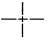
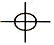
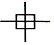
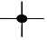
(정답률: 77%)
54. 아래 왼쪽 입체도를 오른쪽과 같이 3각법으로 정투상하여 나타냈을 경우 이 도면에 관한 설명으로 맞는 것은?
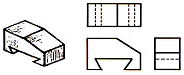
- 정면도만 틀림
- 평면도만 틀림
- 우측면도만 틀림
- 투상한 도면은 모두 올바름
(정답률: 64%)
55. 한 변이 10㎜인 정사각형을 2:1로 도시하려고 한다. 실제 정사각형 면적을 L이라고 하면 도면 도형의 정사각형 면적은 얼마인가?
- 1/2 L
- 2 L
- 1/4 L
- 4 L
(정답률: 39%)
56. 그림과 같이 상하면의 절단된 경사각이 서로 다른 원토의 전개도 형상으로 가장 적합한 것은?
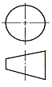
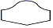
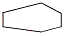
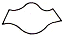
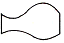
(정답률: 50%)
57. 그림과 같은 KS 용접기호의 용접 명칭으로 올바른 것은?
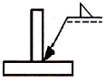
- I형 맞대기 용접
- 플러그 용접
- 필릿 용접
- 점 용접
(정답률: 84%)
58. 나사 호칭 표시 “M20 × 2"에서 숫자 ”2“의 뜻은?
- 나사의 등급
- 나사의 줄 수
- 나사의 지름
- 나사의 피치
(정답률: 62%)
59. 판의 두께를 나타내는 치수 보조 기호는?
- C
- R
- □
- t
(정답률: 79%)
60. 그림과 같은 입체도에서 화살표방향으로 본 투상도로 적합한 것은?
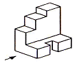
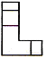
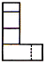
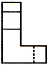
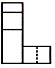
(정답률: 76%)